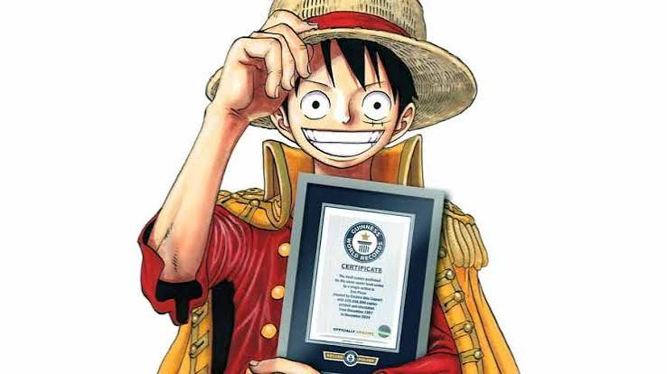

Recordes Globais
One Piece possui o Guinness World Record de mangá mais vendido feito por um único autor no mundo!
Curiosidade sobre o autor Eiichiro Oda
Eiichiro Oda começou a publicar a obra em 1997 na revista Weekly Shōnen Jump e dorme apenas poucas horas por dia durante a produção dos capítulos.